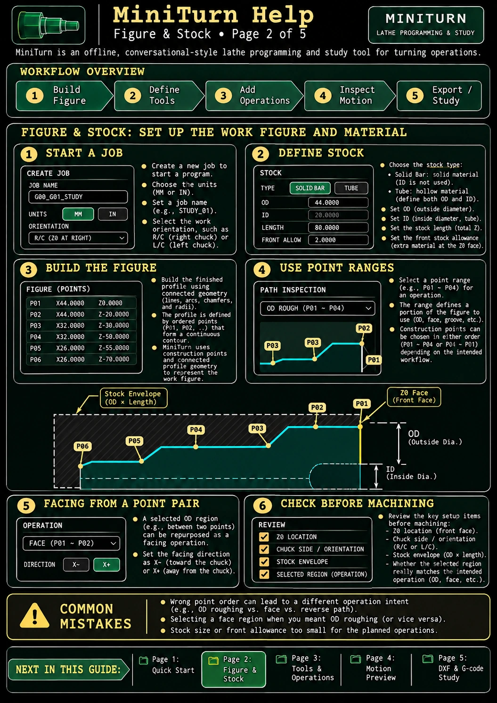

Pictorial user guide · 2 of 5
Figure & Stock
Set stock dimensions, construct the profile, and choose a machining region.

Key points
- Choose inch or mm and confirm chuck-side orientation and Z0.
- Define solid or tube stock, then build connected profile geometry.
- X+ means movement toward larger diameters; X− toward smaller diameters. These are radial directions, not directions toward the chuck.
The guide images are illustrated examples and may show older screen labels or example settings. Follow the current app's displayed values and diagnostic messages. Machine-ready NC output is locked; geometric previews and studies are not safety certification.